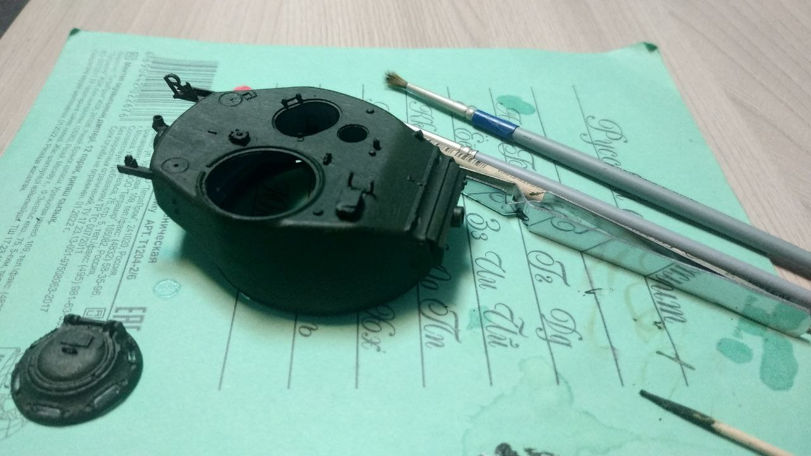

MODEL
ing
Моделирование - просто
Главная
Информация
Галлерея
Об авторе
Об авторе:

Возвращаясь к истокам, я начал поиск того, чем действительно горю, кроме плоских шуток. Выбор пал на моделизм.
Объединив навыки верстки и свои познания вышел этот сайт.
Не ругайте сильно за дизайн, пожалуйста...